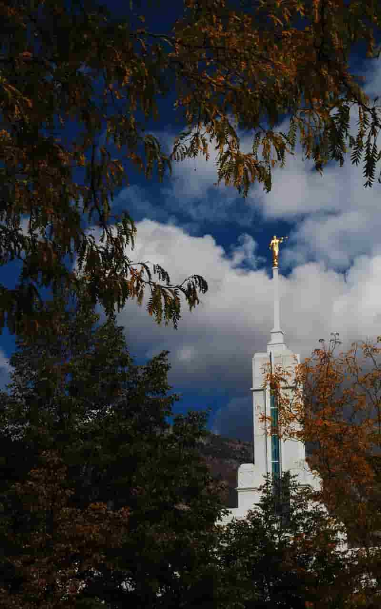
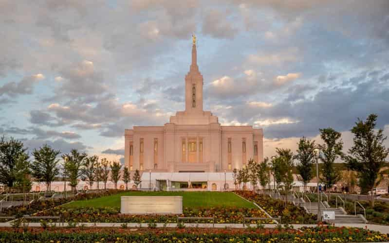
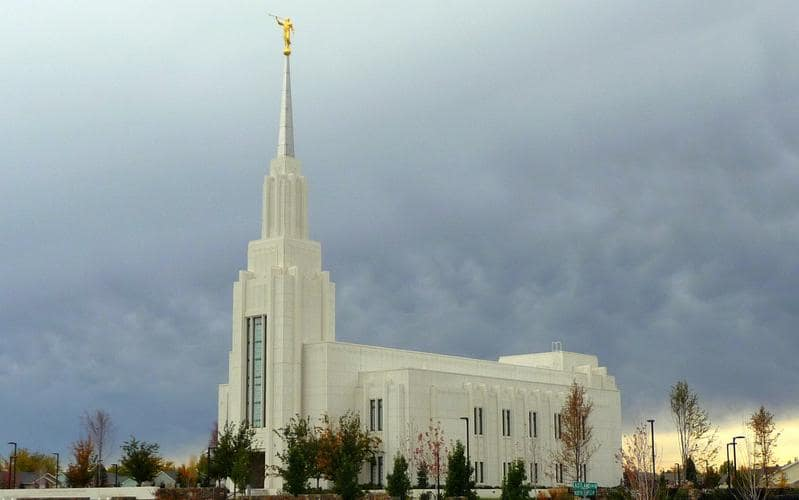

Temple Album
Home
Old
New
Large
Small
Menu Name
Bountiful Utah Temple
Laie Hawaii Temple
Manila Philippines Temple

Mount Timoanogos Utah Temple
Nauvoo Illinois Temple

Pocatello Idaho Temple
Salt Lake Temple

Twin Falls Idaho Temple
Washington DC Temple